Home / Past papers / MLP End Term / this paper
IIT M FOUNDATION ET1 EXAM QPF2 S1 03 Sep - 03 Sep 2023
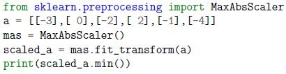
What will be the output of the following code: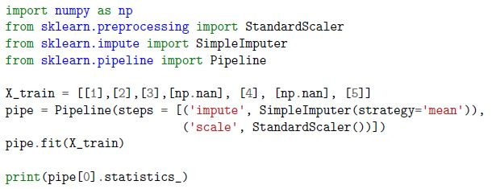
What will be the numerical value in the output array of the following code: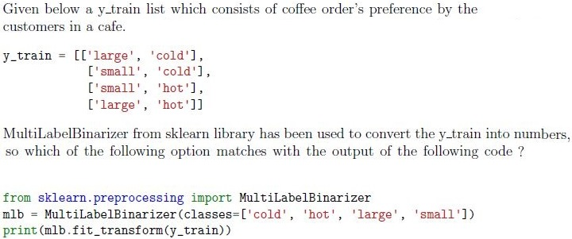
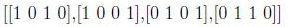
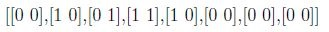
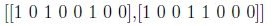
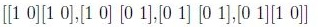
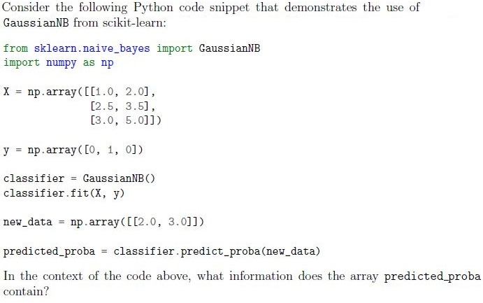
- The predicted classes for the new data points.
- The decision boundary values for the classes.
- The posterior probabilities of the classes for the new data points.
- The likelihood estimates for the new data points.
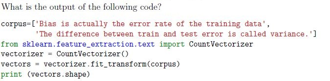
- (15,2)
- (2,3)
- (2,15)
- (15,3)
- Linear Regression
- Decision Tree
- K-means Clustering
- Support Vector Machine
- Complete Linkage
- Ward’s Linkage
- Single Linkage
- Average Linkage
- Distribution-based Clustering
- Density-based Clustering
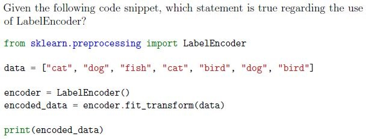
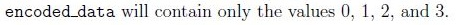
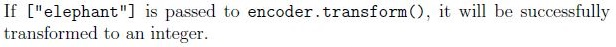
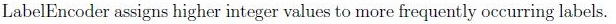
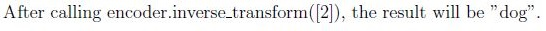

- MultinomialNB
- RandomForestRegressor
- LogisticRegressor
- SGDRegressor
- It is a technique used to minimize the adjusted loss function and avoidunderfitting.
- It helps in increasing the bias of the training model.
- It determines the rows to be selected as a training dataset.
- Elastic net regularization is a combination of L1 and L2 regularization both.
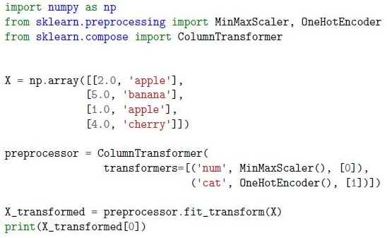
Given the following code snippet that preprocesses a dataset with both continuous and categorical features using sklearn.preprocessing tools, what will be the first row of the X transformed array after preprocessing?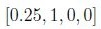
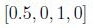
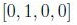
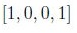
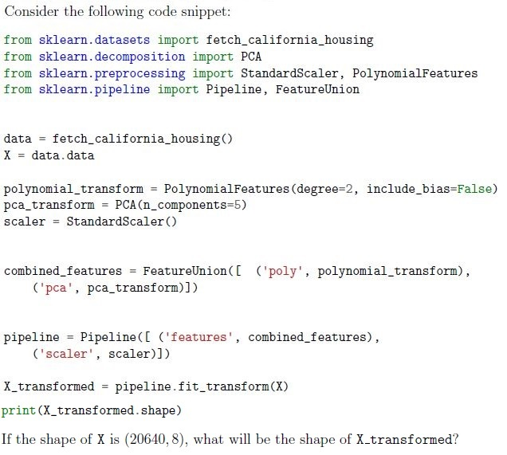
- (20640, 8)
- (20640, 5)
- (20640, 44)
- (20640, 49)
- Predict the mean or median of the target variable for all instances.
- Fit a complex mathematical function to the data.
- Randomly shuffle the target variable values to make predictions.
- Predict the sum of the input features for each instance.
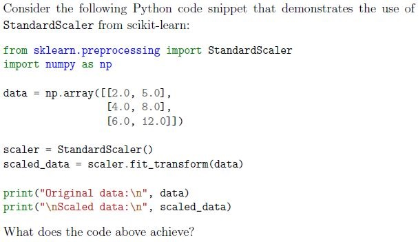
- It converts the numerical values in the data array to categorical labels.
- It standardizes the features in the data array to have zero mean and unitvariance.
- It applies a logarithmic transformation to the values in the data array.
- It removes the mean and scales the features in the data array to a specificrange.
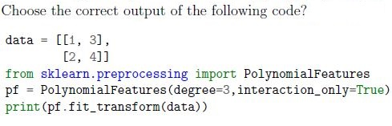
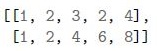
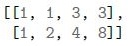
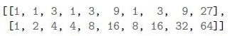
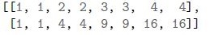
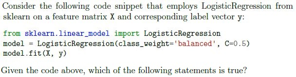
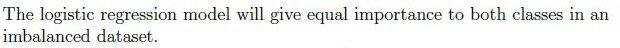
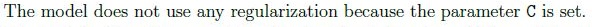
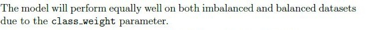
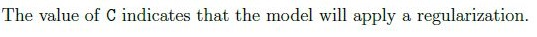
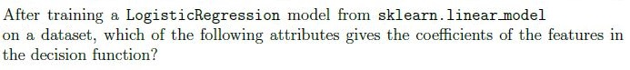
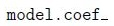
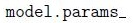
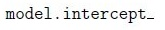
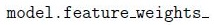
- Newton-CG
- SGD
- LBFGS
- Liblinear
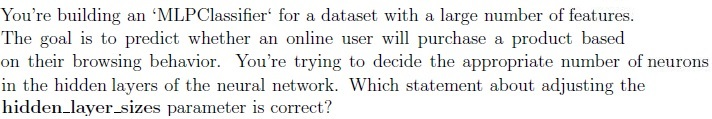
- Increasing the number of neurons in hidden layers will always lead to bettermodel performance.
- Decreasing the number of neurons in hidden layers reduces the model’scapacity to capture complex patterns.
- The number of neurons in hidden layers does not significantly affect themodel’s performance.
- Finding the optimal number of neurons is a trial-and-error process and mayrequire experimentation.
- Number of hidden layers
- Number of neurons in input layer
- Learning rate
- Activation function
 You’re working on a binary classification task using the ‘MLPClassifier’ to predict whether a customer will make a purchase based on their browsing behavior.You’re concerned about overfitting due to the complexity of the model. You decide to increase the ‘alpha’ parameter to control overfitting. The following code snippet shows the application of ‘MLPClassifier’:
You’re working on a binary classification task using the ‘MLPClassifier’ to predict whether a customer will make a purchase based on their browsing behavior.You’re concerned about overfitting due to the complexity of the model. You decide to increase the ‘alpha’ parameter to control overfitting. The following code snippet shows the application of ‘MLPClassifier’: - Increasing the model’s complexity to fit the training data more closely.
- Adding a stronger regularization term to the loss function, discouragingcomplex models.
- Making the model more sensitive to outliers and noise in the data.
- Adjusting the learning rate to control convergence speed.
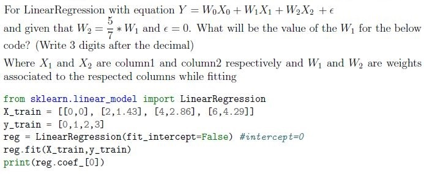
 Using the confusion matrix given below. What is the precision score for the label (class) 1 ?
Using the confusion matrix given below. What is the precision score for the label (class) 1 ? 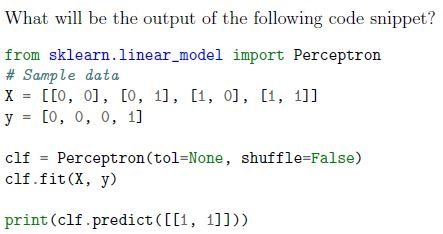
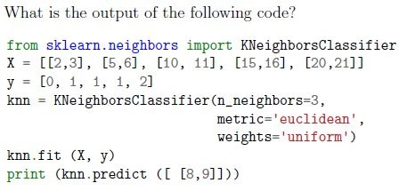
- KNeighborsClassifier with low values of n_neighbors produces complexdecision boundaries.
- KNeighborsClassifier with low values of n_neighbors produces smoothdecision boundaries.
- In KNeighborsClassifier the scale of the features(columns) can impact thedecision boundaries.
- None of these
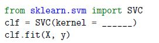
Fill in the missing parameter value in the following estimator that can be used to classify the data- ‘lasso’
- ‘linear’,
- ‘rbf’,
- ‘scale’
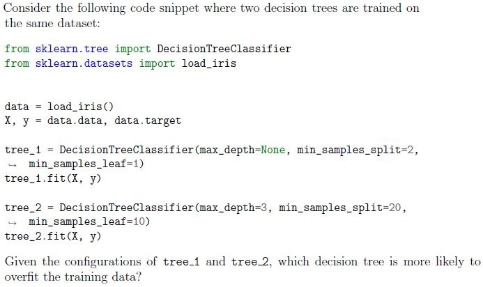
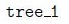
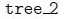
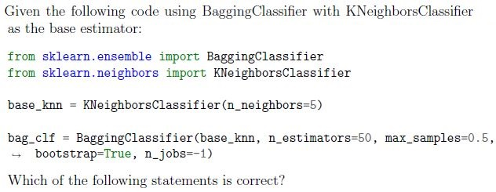
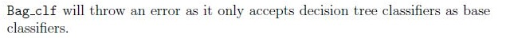
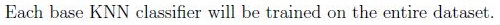
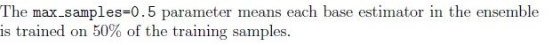
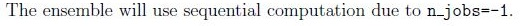
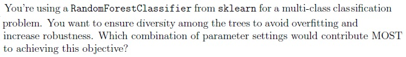
 You’re working with a dataset of customer purchase behavior, including attributes “Total Amount Spent” and “Number of Items Purchased.” You decide to use K-means clustering to segment customers into groups based on these features. The following code snippet demonstrates the K-means clustering process:
You’re working with a dataset of customer purchase behavior, including attributes “Total Amount Spent” and “Number of Items Purchased.” You decide to use K-means clustering to segment customers into groups based on these features. The following code snippet demonstrates the K-means clustering process: - The total amount spent by each customer.
- The cluster assignments indicating which group each customer belongs to.
- The number of items purchased by each customer.
- The centroid coordinates of the clusters formed.
Answer key
- Q1 (SA, 2 marks): -1
- Q2 (SA, 2 marks): 3
- Q3 (MCQ, 2 marks): A
- Q4 (MCQ, 2 marks): C
- Q5 (MCQ, 2 marks): C
- Q6 (MCQ, 2 marks): C
- Q7 (MCQ, 2 marks): A
- Q8 (MCQ, 2 marks): A
- Q9 (MSQ, 3 marks): A, D
- Q10 (MSQ, 3 marks): A, D
- Q11 (MSQ, 3 marks): B, D
- Q12 (MCQ, 3 marks): A
- Q13 (MCQ, 3 marks): D
- Q14 (MCQ, 3 marks): A
- Q15 (MCQ, 3 marks): B
- Q16 (MCQ, 3 marks): B
- Q17 (MCQ, 3 marks): D
- Q18 (MCQ, 3 marks): A
- Q19 (MCQ, 3 marks): D
- Q20 (MCQ, 3 marks): D
- Q21 (MCQ, 3 marks): D
- Q22 (MCQ, 3 marks): B
- Q23 (SA, 3 marks): 0.327 to 0.333
- Q24 (SA, 3 marks): 0.25
- Q25 (SA, 3 marks): 1
- Q26 (SA, 3 marks): 1
- Q27 (MSQ, 4 marks): A, C
- Q28 (MSQ, 2 marks): B, C
- Q29 (MCQ, 4 marks): A
- Q30 (MCQ, 4 marks): C
- Q31 (MCQ, 4 marks): C
- Q32 (MCQ, 4 marks): A
- Q33 (MCQ, 4 marks): D
- Q34 (MCQ, 4 marks): B
Concepts this paper tests
Auto-generated summary from the source site. Handy as a checklist; the lessons above explain each idea from scratch.
Here’s a structured summary of the core topics, concepts, and equations for the Diploma Level: Machine Learning Practice (Computer-Based Exam). The summary is organized by key themes, followed by a Mermaid knowledge graph to visualize relationships.
1. Data Preprocessing
Key Concepts:
Scaling/Normalization:
StandardScaler: Standardizes features to have mean = 0 and variance = 1.- Formula:
MinMaxScaler: Scales features to a range (default: [0, 1]).- Formula:
MaxAbsScaler: Scales by the maximum absolute value (preserves sparsity).- Formula:
Example (Q2):
from sklearn.preprocessing import MaxAbsScaler scaled_data = MaxAbsScaler().fit_transform([[1], [-2], [3]]) # Output: min(scaled_data) = -1 (since -2/2 = -1)
Imputation:
SimpleImputer: Replaces missing values with mean/median/mode.Example (Q3):
from sklearn.impute import SimpleImputer imp = SimpleImputer(strategy='mean') imp.fit_transform([[1], [2], [np.nan], [4]]) # Imputed mean = 3
Categorical Encoding:
LabelEncoder: Converts categories to integers (e.g.,["cat", "dog"] → [0, 1]).- Note: Not suitable for non-ordinal data (use
OneHotEncoderinstead). Example (Q10):
from sklearn.preprocessing import LabelEncoder encoder = LabelEncoder() encoded = encoder.fit_transform(["cat", "dog", "cat"]) # Output: [0, 1, 0]
- Note: Not suitable for non-ordinal data (use
OneHotEncoder: Creates binary columns for each category.MultiLabelBinarizer: Converts multi-label data to binary matrix (Q4).Example:
from sklearn.preprocessing import MultiLabelBinarizer mlb = MultiLabelBinarizer(classes=['cold', 'hot', 'large', 'small']) mlb.fit_transform([['large', 'cold'], ['small', 'hot']]) # Output: [[1, 0, 1, 0], [0, 1, 0, 1]]
Polynomial Features:
PolynomialFeatures: Generates interaction terms/polynomials (Q17).Example:
from sklearn.preprocessing import PolynomialFeatures pf = PolynomialFeatures(degree=2, interaction_only=True) pf.fit_transform([[1, 2]]) # Output: [1, 1, 2, 1*2] (no x² terms)
Pipelines:
Pipeline: Chains transformers/estimators (Q3).Example:
from sklearn.pipeline import Pipeline pipe = Pipeline([ ('impute', SimpleImputer(strategy='mean')), ('scale', StandardScaler()) ])
Key Equations:
| Technique | Formula |
|---|---|
| Standard Scaling | |
| Min-Max Scaling | |
| Max Abs Scaling | |
| Polynomial Features | : |
2. Dimensionality Reduction
Key Concepts:
PCA (Principal Component Analysis):
- Reduces dimensionality by projecting data onto orthogonal axes (principal components).
n_components: Number of components to keep.Example (Q14):
from sklearn.decomposition import PCA pca = PCA(n_components=5) pca.fit_transform(X) # X.shape = (n_samples, n_features)
Feature Union:
FeatureUnion: Combines multiple feature transformations (e.g., PCA + PolynomialFeatures).Example (Q14):
from sklearn.pipeline import FeatureUnion combined = FeatureUnion([ ('pca', PCA(n_components=5)), ('poly', PolynomialFeatures(degree=2)) ])
3. Supervised Learning
Key Algorithms:
Linear Models:
Linear Regression:
- Equation: .
fit_intercept=False: Forces intercept (Q24).Example:
from sklearn.linear_model import LinearRegression reg = LinearRegression(fit_intercept=False) reg.fit(X_train, y_train) print(reg.coef_) # Weights [W₁, W₂, ...]
Logistic Regression:
Solvers:
liblinear: Supports L1/L2 regularization (good for small datasets).lbfgs/newton-cg: Fast for large datasets (L2 only).sag/saga: Stochastic gradient descent (supports L1).
Regularization:
C: Inverse of regularization strength (smallerC= stronger regularization).penalty:'l1'(Lasso) or'l2'(Ridge).
Example (Q18, Q20):
from sklearn.linear_model import LogisticRegression model = LogisticRegression(class_weight='balanced', C=0.5, solver='liblinear')Attributes:
coef_: Feature weights.intercept_: Bias term.
Naive Bayes:
GaussianNB: Assumes features follow a normal distribution.
predict_proba: Returns posterior probabilities (Q5).Example:
from sklearn.naive_bayes import GaussianNB clf = GaussianNB() clf.fit(X, y) proba = clf.predict_proba([[2.0, 3.0]]) # Output: [[P(class=0), P(class=1)]]
Support Vector Machines (SVM):
Kernels:
'linear': Linear decision boundary.'rbf': Radial Basis Function (non-linear).'poly': Polynomial kernel.
Example (Q29):
from sklearn.svm import SVC clf = SVC(kernel='rbf')
Decision Trees:
Hyperparameters:
max_depth: Maximum tree depth (None = unlimited).min_samples_split: Minimum samples to split a node.min_samples_leaf: Minimum samples in a leaf.criterion:'gini'(Gini impurity) or'entropy'(information gain).
Overfitting:
- Deeper trees (
max_depth=None) are prone to overfitting (Q30).
- Deeper trees (
Example:
from sklearn.tree import DecisionTreeClassifier tree = DecisionTreeClassifier(max_depth=3, criterion='gini')
Ensemble Methods:
Bagging:
BaggingClassifier: Trains base estimators on bootstrap samples.Parameters:
n_estimators: Number of base models.max_samples: Fraction of samples per estimator.bootstrap: Whether to sample with replacement.
Example (Q31):
from sklearn.ensemble import BaggingClassifier bag_clf = BaggingClassifier( base_estimator=KNeighborsClassifier(n_neighbors=5), n_estimators=50, max_samples=0.5, bootstrap=True )
Boosting:
AdaBoostClassifier: Combines weak learners (e.g., decision stumps) with adaptive weights.Parameters:
n_estimators: Number of boosting stages.learning_rate: Shrinks contribution of each estimator.
Example (Q34):
from sklearn.ensemble import AdaBoostClassifier ada = AdaBoostClassifier( base_estimator=DecisionTreeClassifier(max_depth=1), n_estimators=100, learning_rate=0.1 )
Random Forest:
RandomForestClassifier: Ensemble of decision trees with feature subsampling.Parameters:
max_features: Number of features to consider for splits (e.g.,'sqrt').bootstrap: Whether to use bootstrap sampling.
Example (Q32):
from sklearn.ensemble import RandomForestClassifier rf = RandomForestClassifier( n_estimators=100, max_features='sqrt', bootstrap=True )
Neural Networks:
MLPClassifier (Multi-Layer Perceptron):
Parameters:
hidden_layer_sizes: Tuple specifying neurons per layer (e.g.,(100, 50)).activation:'relu','tanh','logistic'.alpha: L2 regularization strength.solver:'adam','sgd','lbfgs'.
Example (Q21, Q22, Q23):
from sklearn.neural_network import MLPClassifier mlp = MLPClassifier( hidden_layer_sizes=(100,), activation='relu', alpha=0.01, solver='adam' )
Key Equations:
| Algorithm | Key Equation |
|---|---|
| Linear Regression | |
| Logistic Regression | |
| SVM (Linear) | |
| Decision Tree (Gini) | (impurity measure) |
| AdaBoost | (weighted sum of weak learners) |
4. Unsupervised Learning
Key Algorithms:
Clustering:
K-Means:
- Partitions data into
kclusters by minimizing within-cluster variance. Parameters:
n_clusters: Number of clusters.init: Initialization method ('k-means++').
Attributes:
labels_: Cluster assignments for each point.cluster_centers_: Coordinates of centroids.
Example (Q7, Q35):
from sklearn.cluster import KMeans kmeans = KMeans(n_clusters=3) kmeans.fit(X) labels = kmeans.labels_ # Cluster assignments
- Partitions data into
Hierarchical Clustering:
Linkage Methods (Q8):
complete: Maximum distance between clusters.ward: Minimizes variance when merging.single: Minimum distance (can cause chaining).average: Average distance between clusters.
Dimensionality Reduction:
- PCA: See Section 2.
Key Equations:
| Algorithm | Key Equation |
|---|---|
| K-Means | |
| PCA |
5. Model Evaluation
Key Metrics:
Confusion Matrix:
Structure:
[[TN, FP], [FN, TP]]- Precision: (Q25).
- Recall: .
- F1-Score: Harmonic mean of precision and recall.
Regularization:
- L1 (Lasso): Penalizes absolute weights ().
- L2 (Ridge): Penalizes squared weights ().
Elastic Net: Combines L1 and L2 (Q12).
- Formula:
Dummy Regressor:
- Predicts the mean (regression) or most frequent class (classification) (Q15).
Key Equations:
| Metric | Formula |
|---|---|
| Precision | |
| Recall | |
| F1-Score | |
| L1 Regularization | |
| L2 Regularization |
6. Incremental Learning
Key Concepts:
partial_fit:- Updates model with new data without full retraining.
Supported by:
SGDClassifier/SGDRegressor.PassiveAggressiveClassifier.Perceptron.MultinomialNB(Q11).
Example:
from sklearn.linear_model import SGDClassifier clf = SGDClassifier() clf.partial_fit(X_batch, y_batch, classes=[0, 1])
7. Text Feature Extraction
Key Techniques:
CountVectorizer:
- Converts text to a matrix of token counts.
Parameters:
ngram_range: Tuple(min_n, max_n)for n-grams.
Example (Q6):
from sklearn.feature_extraction.text import CountVectorizer vectorizer = CountVectorizer() X = vectorizer.fit_transform(["hello world", "world hello"]) # X.shape = (2, 2) (vocabulary: {'hello', 'world'})
Graph 1: Data Preprocessing
Graph 2: Supervised Learning
Graph 3: Unsupervised Learning
Graph 4: Model Evaluation & Miscellaneous
Exam Tips
Focus on Equations:
- Memorize formulas for scaling, regularization, precision/recall, and PCA.
Sklearn Syntax:
- Know how to initialize and fit transformers/estimators (e.g.,
StandardScaler(),Pipeline()).
- Know how to initialize and fit transformers/estimators (e.g.,
Hyperparameters:
- Understand the role of
C(regularization),n_estimators(ensemble),max_depth(trees), andalpha(neural networks).
- Understand the role of
Common Pitfalls:
LabelEncoderis not for one-hot encoding (useOneHotEncoder).fit_intercept=Falseforces the intercept to 0 in linear models.- K-Means is sensitive to feature scales (always scale data first).